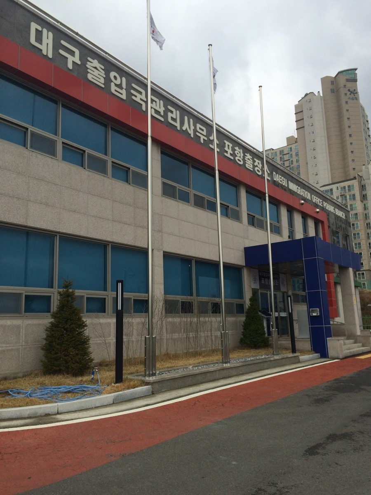
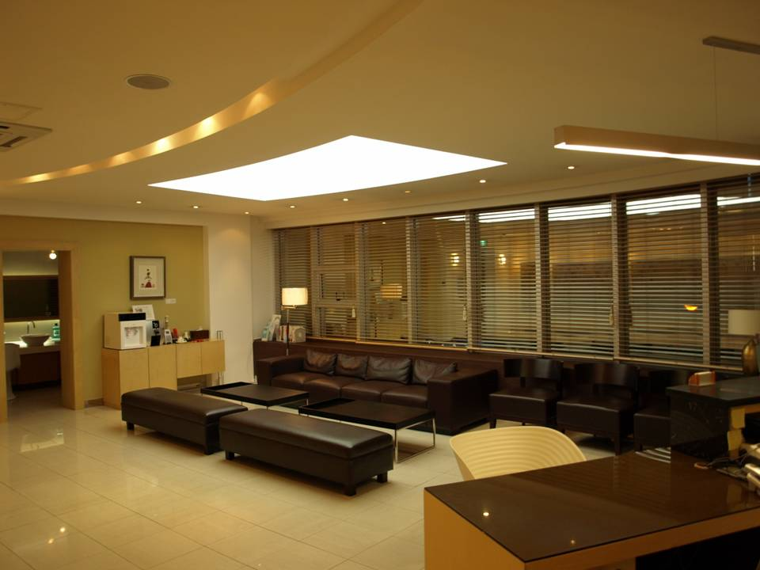
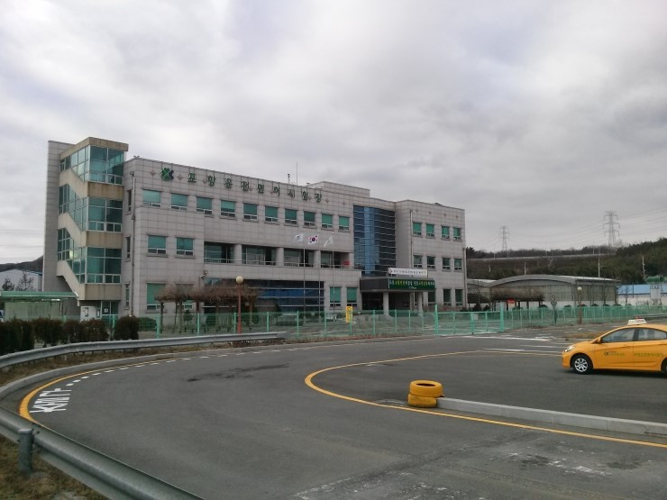

 Pohang's immigration office is called Daegu Immigration Office Pohang Branch. It's located a few blocks back from Yeongildae Beach in Duho-dong. It's important for foreigner to go here when they first arrive in Korea to get their Alien Registration Card (ARC). They should be sure to come back every year before their ARC expires. In order to successfully register as an alien or renew their registration, several documents will be necessary.
Pohang Euilyowon Hospital in Yongheung-dong is probably the cheapest place to get your mandatory health check-up. It costs 75,000 won compared to over 100,000 won for many other hospitals. Also, it isn't one of the busiest hospitals in Pohang and therefore wait times can be quite short. Other major hospitals include Pohang St. Mary's Hospital in I-dong and Good Sunlin Hospital which is just north of the downtown area. These are the largest hospitals in Pohang and would be the place to go for more complicated procedures. They are probably not the best place for your mandatory health check-up. Pohang Euilyowon can get this simple procedure done more quickly than the major hospitals. The entire process for getting the health check-up can take around an hour or slightly more. The health check-up will include the following steps:
When you go to the hospital for the health check-up you should remember to bring these things with you:
 If you're looking for a dental clinic in Pohang, an excellent choice would be Shinsaegye Dental Clinic in Duho-dong. It's located one block back from Yeongildae Beach. Staff are capable of conversing in a basic level of English if you're not very strong in Korean. Their facilities is state of the art and the staff is very knowledgeable in the latest dental practices. They aren't the newest or largest of dental clinics in Pohang and this may be cause of their relatively short wait times. Their business hours are:
 The Pohang Driver's License Testing Center is located outside of Pohang in the town of Ocheon. There are two methods for obtaining a valid driver's license in Korea. The first is to exchange your driver's license from your home country for a Korean one. For the most part, you will easily be able to exchange your home license. It is the fastest and easiest way to be a legal driver in Korea. Exchanging your license is in some ways still a temporary license and is a literal exchange of licensing cards. The exchange requires that you give the local office the physical copy of your home license. Then when you leave Korea your home license will be returned to you when you give the local office your Korean license. You may want to consider becoming a certified Korean driver if you are living in Korea permanently or for a long-extended period. The certified Korean license is valid for 10 years. You will receive a level 2 regular Korean license (standard automatic vehicles) if you exchange your license. You can choose between level 1 (standard manual vehicles) or level 2 if you complete the full licensing process. You have up to one year to renew your license when it expires. You need over 40 driving penalty points to have your license suspended. You can be penalized as follows:
When you visit the Driver's License Testing Center don't forget to bring the following items with you: